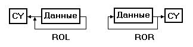
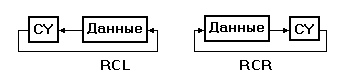
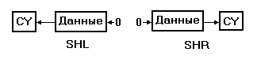

Остальные логические команды на Фиг. 4.19 выполняют сдвиги данных. Команда сдвига перемещает все биты в поле данных либо вправо, либо влево. Это можно проиллюстрировать церковной скамьей, на которой сидят мужчины и женщины. Каждый раз, когда приходит новый человек и садится на край скамьи, остальные сидящие на ней сдвигаются на одно место. Если скамья уже заполнена, то крайний в результате такого сдвига вытесняется с нее. Команда сдвига делает в точности то же самое, только вместо женщин и мужчин здесь выступают нули и еденицы.
На Фиг. 4.20 показаны восемь различных команд сдвига; у этих команд имеются некоторые вариации. Сначала мы рассмотрим общие для этих команд черты.
Как и другие логические команды, сдвиги работают с байтами и словами. Каждая команда указывает единственный операнд. Этот операнд может быть либо регистром, либо ячейкой памяти. Все эти команды используют байт mod-r/m для описания операнда.



Фиг. 4.20 Операции сдвига.
Во всех командах сдвига определяется счетчик сдвигов, т.е. программа указывает число битов, на которое надо сделать сдвиг; это число и есть счетчик сдвигов. Его наиболее распространенное значение - единица. Такой счетчик сдвигает биты операнда на одну позицию. Однако команда может задать произвольный счетчик сдвигов, занося его значение в регистр CL перед сдвигом. Если в команде указано, что счетчик сдвигов надо взять из регистра CL, значение этого регистра определяет число сдвигов битов. Число в регистре CL может быть любым от 0 до 255, но его практически имеющие смысл значения лежат в пределах 0 - 16. Значение 0 не вызывает сдвига, а любое значение больше 16 сдвигает битов больше, чем содержит операнд.
Другая общая черта команд сдвига - это установка флагапереноса. Бит, попадающий за пределы операнда, имеет специальное место. Команды сдвига помещают последний выдвинутый из операнда бит в флаг переноса. Если сдвиг был на один бит, то бит из дальнего конца операнда становится новым значением флага переноса. В случае многобитового сдвига, вдвигаемый в перенос бит появляется изнутри операнда. Флаг переноса имеет значение для операций повышенной точности. Поскольку операнд операции сдвига может иметь максимум 16 бит, программа может организовать работу с данными большего размера с помощью нескольких сдвигов и флага переноса. Программа"разрезает" операнд на 16-битовые куски, а затем сдвигает каждую часть на один бит каждый раз. Флаг переноса используется программой для передачи выдвинутой информации в следующую часть сдвигаемого операнда.
Верхние четыре команды на Фиг.4.20 - команды циклического сдвига. На рисунке схематически представлена работа каждой команды. Циклические сдвиги переносят появляющийся в конце операнда бит в другой конец. Циклический сдвиг влево ROL и циклический сдвиг вправо ROR различаются лишь направлением сдвига данных. Аналогично, циклический сдвиг влево с переносом RCL и циклический сдвиг вправо с переносом RCR являются зеркальным отражением друг друга. Команды ROL и RCL различаются в трактовке флага переноса. Байтовая команда RCL рассматривает данные как 9-битовые, причем роль девятого бита играет флаг переноса. Если операнд - слово, команда ROL циклически сдвигает 16 бит, а команда RCL циклически сдвигает 17 бит.
Команды снизу Фиг.4.20 не возвращают выдвигаемые из операнда биты в свой операнд. Эти биты попадают в флаг переноса, а затем просто исчезают. Значение, вдвигаемое в операнд, определяется типом сдвига. В случае логического сдвига вдвигаемый бит всегда 0; арифметический сдвиг выбирает вдвигаемый бит таким, чтобы сохранить знак операнда.
Почему сдвиг называется арифметическим, если он входит в группу логических команд? Сдвиг числа на одну позицию (бит) эквивалентен умножению или делению этого числа на 2. В десятичной системе счисления, добавление нуля в конце числа умножает его на 10. В двоичной арифметике добавление 0 в конце умножает число на 2. Так как ЭВМ не может добавить другой бит в конце операнда, операция сдвига действует аналогично. Команда сдвига влево перемещает все биты влево на одну позицию, а в младшую позицию помещает 0. Таким образом, сдвиг влево умножает число на 2. Если величина сдвига больше единицы, число умножается на 2, возведенное в степень, равную содержимому счетчика сдвигов. Например, сдвиг влево на 3 бита эквивалентен умножению на 8.
Сдвиг числа вправо - это то же самое деление на 2. Сдвинутый операнд - частное, а флаг переноса - остаток. Если счетчик сдвигов больше 1, операнд по-прежнему есть частное, а остаток теряется. Таким образом, команды сдвига делают эффективным умножение и деление на степень 2. Фактически, воэможность замены умножения сдвигом становится хорошим выходом в ситуациях, когда необходимо исключить умножение, даже если множитель не есть степень 2.
При арифметическом сдвиге вместо деления на 2 отрицательного числа возникает следующая проблема. Если команда вдвигает 0 в старший бит, результат становится положительным. Команда арифметического сдвига вправо SAR решает эту проблему путем восстановления значения старшего бита во время сдвига. Поэтому отрицательное число остается отрицательным, а положительное - положительным. Эта проблема не возникает в случае сдвига влево, поскольку бит знака находится у операнда слева. Из-за этого команды логического сдвига влево SHL и арифметического сдвига влево SAL идентичны.
В связи с арифметической природой, все команды сдвогов влияют на флаг переполнения так же, как и на флаг переноса. Флаг переполнения не определен в случае счетчиков сдвига больших единицы, но при единичных сдвигах команды устанавливают флаг переполнения только в случае, если в результате операции изменился знак числа. Если старший бит не изменился, флаг переполнения сбрасывается, т.е. флаг переполнения показывает, дает ли подразумеваемое сдвигом умножение или деление правильный результат в дополнительном коде.
На Фиг. 4.21 приведены два примера команд сдвига. Первый пример демонстрирует умножение на число с помощью команд сдвига влево. В примере выполняется умножение на 9, не являющееся степенью 2. Сначала в примере данные сдвигаются влево на три позиции, чтобы умножить число на 8. Затем программа складывает полученное значение с первоначальным, давая результат, равный первоначальному числу, умноженному на 9.
PUSH DX MOV DX,9 IMUL DX POP DX
Кроме того, умножение на 9 с помощью сдвига дает 16-битовый результат, а не 32-битовый, как команда IMUL.
Все же в программе умножение с помощью сдвига может оказаться желательным в некоторых случаях. В первую очередь, его преимущество - скорость выполнения. Команда IMUL требует много времени, тогда как команда сдвига выполняется гораздо быстрее. В случае примера на Фиг. 4.21, метод сдвига работает примерно на 25% быстрее. Выигрыш небольшой, но может оказаться решающим для приложения, зависящего от умножения целых чисел на 9. Умножения на степень 2 могут дать и больший выигрыш в скорости выполнения.
Microsoft (R) Macro Assembler Version 5.00 1/1/80 04:01:21
Фиг. 4.21 Примеры инструкций сдвига Page 1-1
PAGE ,132
TITLE Фиг. 4.21 Примеры инструкций сдвига
0000 CODE SEGMENT
ASSUME CS:CODE,DS:CODE
;--------------------------------------------------
; Эта программа умножает число, заданное в регистре AX
; на 9 без использования команды умножения
;--------------------------------------------------
0000 MUL9 PROC NEAR
0000 51 PUSH CX ; Сохранение регистра CX в стеке
0001 50 PUSH AX ; Временное сохранение AX
0002 B1 03 MOV CL, 3 ; Будем сдвигать регистр AX на 3 разряда,
0004 D3 F8 SAR AX, CL ; тем самым уножая на 8
0006 8B C8 MOV CX, AX ; CX <- AX * 8
0008 58 POP AX ; Восстановление AX
0009 03 C1 ADD AX, CX ; AX <- исходное значение * 9
000B 59 POP CX
000C C3 RET
000D MUL9 ENDP
;--------------------------------------------------
; Эта программа программа выделяет один бит в
; регистре AX, номер которого задан в регистре CL
;--------------------------------------------------
000D 53 PUSH BX ; Сохранение регистра BX в стеке
000E BB 0001 MOV BX, 1 ; Создание маски (1 в разряде 0
; регистра BX)
0011 D3 C3 ROL BX, CL ; Сдвиг маски
0013 23 C3 AND AX, BX ; Выделение требуемого разряда
0015 5B POP BX ; Восстановление регистра BX
0016 C3 RET
0017 CODE ENDS
END
Фиг. 4.21 Примеры сдвига
Второй пример на Фиг. 4.21 показывает, как использовать сдвиг на переменное число разрядов для выборки отдельного бита. Этот фрагмент предполагает, что исходная информация находится в регистре AX, а регистр CL содержит номер бита, выбираемого из регистра AX: если содержимое регистра CL равно 8, из регистра AX выбирается бит 8. Программа сдвигает маску в регистре BX на указанную в регистре CL позицию, а команда AND изолирует выбранный бит.
Для того чтобы этот пример работал правильно, число в регистре CL должно быть в диапазоне 0 - 15. Можно было бы использовать команду AND, чтобы выделить младшие четыре бита значения сдвига в регистре CL; команда AND CL, 0FH гарантирует, что число в регистре CL находится в пределах 0 - 15. Вы можете изменить этот пример так, чтобы выделить более одного бита из слова. Можно было бы выделить тетраду из 16-битового слова, заменив значение маски в регистре BX.